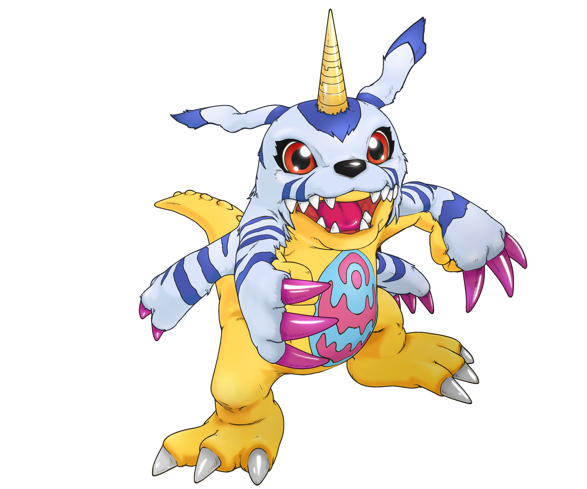
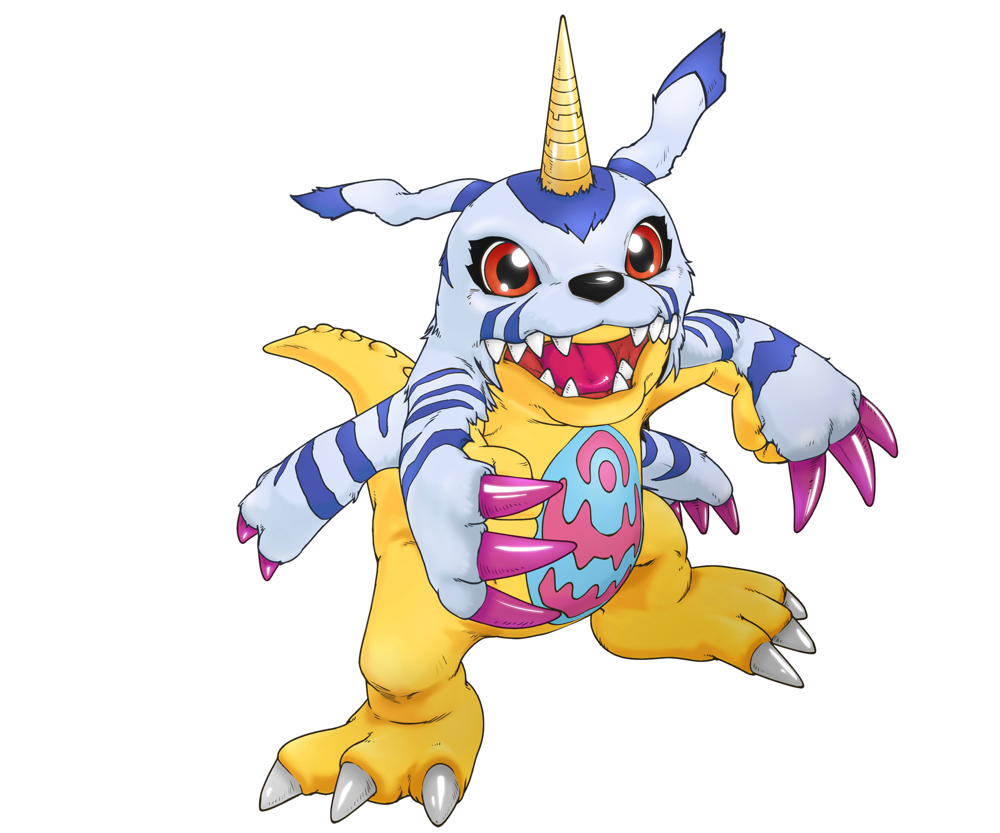

igiWiki
 

¡Explora el Mundo Digital como nunca antes!
Temporadas
Galería de Digimons
Digimon Adventure
Agumon
Un Digimon reptil valiente con mucho apetito.
Series: Adventure, Adventure 02
Gabumon
Un Digimon con piel de lobo muy leal.
Series: Adventure, Adventure 02
Biyomon
Un Digimon ave rosada con un corazón cálido.
Series: Adventure, Adventure 02
Tentomon
Un Digimon insecto con gran inteligencia.
Series: Adventure, Adventure 02

Palmon
Un Digimon planta con un carácter fuerte.
Series: Adventure, Adventure 02

Gomamon
Un Digimon acuático juguetón.
Series: Adventure, Adventure 02

Patamon
Un Digimon volador con un corazón puro.
Series: Adventure, Adventure 02
Gatomon
Un Digimon felino con gran agilidad.
Series: Adventure, Adventure 02
Botamon
La forma Fresh de Agumon, un pequeño Digimon recién nacido.
Series: Adventure
Greymon
La digievolución de Agumon, un dinosaurio poderoso.
Series: Adventure
Garurumon
La digievolución de Gabumon, un lobo feroz.
Series: Adventure
Birdramon
La digievolución de Biyomon, un ave de fuego.
Series: Adventure
Kabuterimon
La digievolución de Tentomon, un insecto blindado.
Series: Adventure

Togemon
La digievolución de Palmon, un cactus boxeador.
Series: Adventure
Ikkakumon
La digievolución de Gomamon, una bestia marina.
Series: Adventure
Angemon
La digievolución de Patamon, un ángel guerrero.
Series: Adventure
Angewomon
La digievolución de Gatomon, un ángel celestial.
Series: Adventure, Adventure 02
MetalGreymon
La digievolución avanzada de Agumon, un dinosaurio cyborg.
Series: Adventure
WereGarurumon
La digievolución avanzada de Gabumon, un lobo bípedo feroz.
Series: Adventure

WarGreymon
La digievolución definitiva de Agumon, un guerrero dragón.
Series: Adventure
MetalGarurumon
La digievolución definitiva de Gabumon, un lobo cyborg.
Series: Adventure
MetalSeadramon
Un Digimon marino gigante, villano en el Mundo Digital.
Series: Adventure
LadyDevimon
Un Digimon demoníaco con un aura oscura.
Series: Adventure
Devimon
Un Digimon maligno que controla las sombras.
Series: Adventure
Sukamon
Un Digimon hecho de desechos, con una personalidad cómica (Culo con caca).
Series: Adventure
Digimon Adventure 02

Veemon
Un Digimon dragón pequeño con gran corazón.
Series: Adventure 02
Hawkmon
Un Digimon ave elegante y leal.
Series: Adventure 02
Armadillomon
Un Digimon acorazado con un carácter relajado.
Series: Adventure 02
Wormmon
Un Digimon insecto tímido pero valiente.
Series: Adventure 02
Flamedramon
La digievolución armada de Veemon con el Digi-Egg del Valor.
Series: Adventure 02
Raidramon
La digievolución armada de Veemon con el Digi-Egg de la Amistad.
Series: Adventure 02
Aquilamon
La digievolución de Hawkmon, un águila majestuosa.
Series: Adventure 02
Ankylomon
La digievolución de Armadillomon, un dinosaurio acorazado.
Series: Adventure 02
Stingmon
La digievolución de Wormmon, un insecto guerrero.
Series: Adventure 02
ExVeemon
La digievolución natural de Veemon, un dragón fuerte.
Series: Adventure 02
Paildramon
La digievolución DNA de ExVeemon y Stingmon.
Series: Adventure 02
Silphymon
La digievolución DNA de Aquilamon y Gatomon.
Series: Adventure 02
Digimon Tamers

Guilmon
Un Digimon creado por Takato, con instintos salvajes.
Series: Tamers

Terriermon
Un Digimon conejo pequeño pero valiente.
Series: Tamers
Renamon
Un Digimon zorro ágil y misterioso.
Series: Tamers
Growlmon
La digievolución de Guilmon, un dragón feroz.
Series: Tamers
Gargomon
La digievolución de Terriermon, un cazador armado.
Series: Tamers
Kyubimon
La digievolución de Renamon, un zorro de nueve colas.
Series: Tamers
WarGrowlmon
La digievolución avanzada de Guilmon, un cyborg dragón.
Series: Tamers
Rapidmon
La digievolución avanzada de Terriermon, un guerrero veloz.
Series: Tamers
Taomon
La digievolución avanzada de Renamon, un mago místico.
Series: Tamers
Impmon
Un Digimon travieso con un lado oscuro.
Series: Tamers
Beelzemon
La digievolución de Impmon, un demonio motociclista.
Series: Tamers
Calumon
Un Digimon pequeño que facilita la digievolución.
Series: Tamers
Sakuyamon
La forma Mega de Renamon, una sacerdotisa mística y poderosa.
Series: Tamers
Digimon Frontier
Agunimon
La forma Digimon de Takuya tras usar el Espíritu Humano del Fuego.
Series: Frontier
Lobomon
La forma Digimon de Koji con el Espíritu Humano de la Luz.
Series: Frontier
Kazemon
La forma Digimon de Zoe con el Espíritu Humano del Viento.
Series: Frontier
Beetlemon
La forma Digimon de J.P. con el Espíritu Humano del Trueno.
Series: Frontier
Kumamon
La forma Digimon de Tommy con el Espíritu Humano del Hielo.
Series: Frontier
BurningGreymon
La forma Bestia de Takuya con el Espíritu Bestia del Fuego.
Series: Frontier
KendoGarurumon
La forma Bestia de Koji con el Espíritu Bestia de la Luz.
Series: Frontier
Zephyrmon
La forma Bestia de Zoe con el Espíritu Bestia del Viento.
Series: Frontier
MetalKabuterimon
La forma Bestia de J.P. con el Espíritu Bestia del Trueno.
Series: Frontier
Korikakumon
La forma Bestia de Tommy con el Espíritu Bestia del Hielo.
Series: Frontier
Bokomon
Un Digimon sabio que guía a los niños.
Series: Frontier
Leomon
Un Digimon león noble y valiente, conocido por su sacrificio.
Series: Frontier, adventure, tamers
Lucemon
Un ángel caído y villano principal, con un poder inmenso.
Series: Frontier
Otros Digimons
Gaogamon
Un Digimon lobo poderoso, compañero de combate.
Series: Data Squad